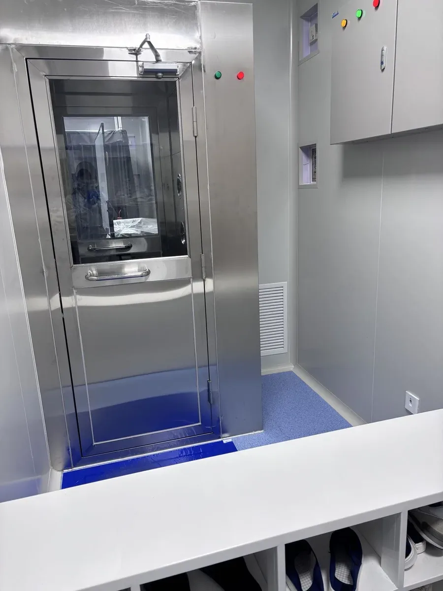
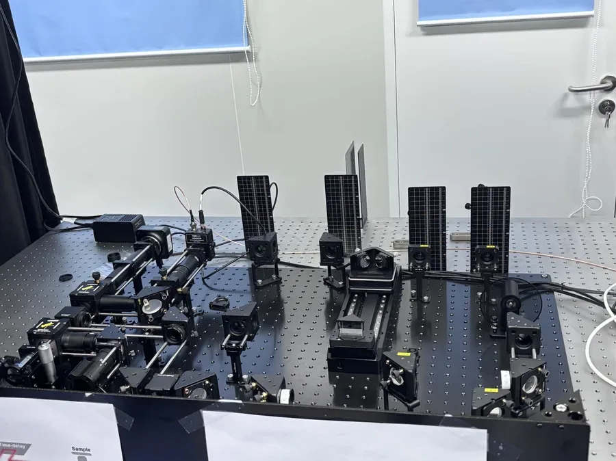
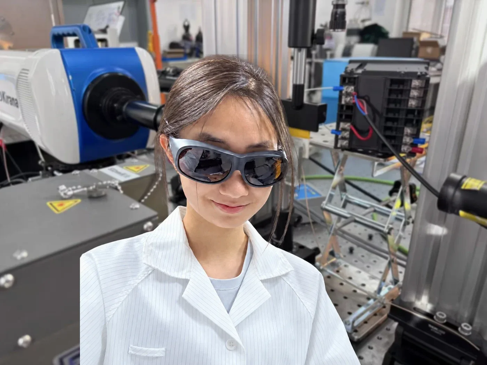

Light,measured
Polarisation control and twelve experimental optics reports, then Raman and laser systems in a research lab.
I worked through twelve classic optics experiments and wrote each up in full. The measurements agree closely with reference values: a He-Ne wavelength of about 633 nm against 632.8 nm, and Malus's law within 0.4% at 45°.
0optics experiments, each a full report
0+polarisation states tested
≈ 0 nmHe-Ne wavelength, measured
0%Malus's law deviation at 45°
01Twelve experiments
Every report ended with an error analysis: read many fringes at once, both sides of a pattern, and turn screws in one direction only.
Thin lensf = 100.0 mm by the conjugate method
Newton's ringsLens radius ≈ 0.85 m
Air wedgeSheet thickness ≈ 74 µm
Young's double slitHe-Ne wavelength ≈ 633 nm
Diffraction gratingMercury green line ≈ 546 nm
Malus's lawI/I₀ = 0.502 at 45°
Abbe refractometerWater 1.3330, sugar solution 1.3474
HolographyA 3-D image rebuilt from a plate
02In the lab
I built every set-up myself, then operated Raman and laser systems normally used by graduate students and tested more than twenty polarisation states of the beam.



